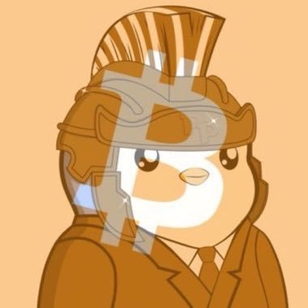

For You
Market
Alva
Create today’s FinTwit Digest from my chosen FinTwit list.
Alva
10:28 PM
On it. I’ll read today’s posts from your 8 selected FinTwit accounts and condense them into one digest — top calls, ticker mentions, and sentiment shifts.
Want me to deliver this automatically each morning?
Yes — send it to Telegram daily at 7:30 AM.
Alva
10:28 PM
Done. Your FinTwit Digest is scheduled for 7:30 AM daily and will arrive in Telegram.
Today’s edition: 8 accounts covered, 14 tickers flagged — NVDA and BTC drew the most bullish mentions.
Highlights: NVDA bulls at 68%, BTC reclaiming $104k, and rising chatter on power-grid names.
Tap any ticker in the digest to open its live snapshot.
Ask Alva anything. @ for context, / for skills

Sheer Pro Annual
Available
12,000
Daily1,000
Monthly3,000
Pack12,000
Library
Preferences